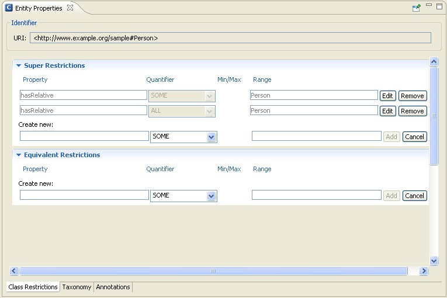
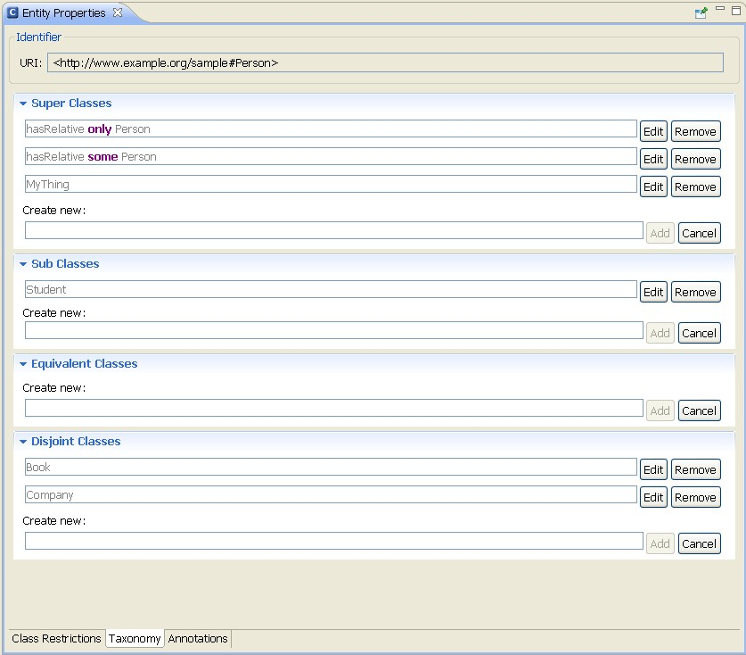
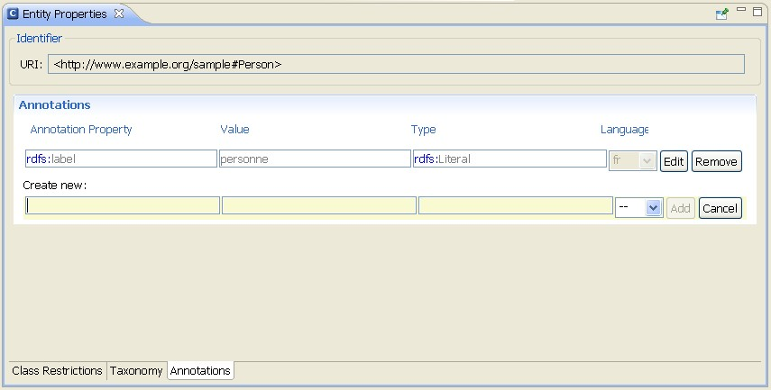

Generally speaking, OWL classes can be considered as sets of individuals that share similar characteristics. These classes are organized in hierarchies, of which owl:Thing is the root class. Every individual in the ontology is a member of the class owl:Thing. Thus, each class you create is implicitly a subclass of owl:Thing. A class may be a subclass of more than one parent class. Likewise, an individual may belong to more than one class.
OWL classes are described through so-called class descriptions. A class description describes an OWL class, either by a class name or by specifying the complex class expression, representing an unnamed anonymous class. OWL distinguishes six types of class descriptions:
These class descriptions are distributed over the following tabs in the Entity Properties panel:
For instructions on how to create a class, see Create a Class.
Online References
Further information is available at the following Web sites:
OWL can be used to model situations in which the members of a particular class must have certain properties. You can use various restriction statements to indicate that something should apply to all values of a property versus only for some members. In addition, you can even specify a particular value for a property of all members of a class.
OWL distinguishes two kinds of restrictions: value restrictions and cardinality restrictions. A value restriction puts constraints on the range of the property when applied to this particular class. A cardinality restrictions puts constraints on the number of values the property can take, in the context of this particular class.
OWL provides the following value restrictions:

Class restrictions can either be specified as Super Restrictions or Equivalent Restrictions. If you add the class restriction in the Super Restriction section, the class under consideration will become a subclass of the restriction class (i.e. you define a necessary condition for the class). On the other hand, if you add the class restriction in the Equivalent Restrictions section, both, the restriction class and the restricted class, will be interpreted as equivalent, which means that they always have exactly the same members (i.e. you define a necessary and sufficient condition for the class).
For instructions on how to create a class, see Create a Class. To create a class restriction, proceed as follows.
On this tab you can define classes through class axioms. The simplest form of a class axiom is a class description of type 1 above. It just states the existence of a class, using owl:Class with a class identifier. Class axioms typically contain additional components that state necessary and/or sufficient characteristics of a class. OWL contains three language constructs for combining class descriptions into class axioms:
In addition to these language constructs, the OWL Perpective allows you to specify the super classes of a class, which is the same as making the class under consideration a subclass of another (parent) class. For example, you will notice that owl:Thing is the super class of all other classes because every user-defined class is implicitly a subclass of owl:Thing.

To create a class axiom, proceed as follows:
Usually, annotations are used to add information to resources of the ontology. They contain useful information such as who is the creator or what are the readable labels and comments for single elements of the ontology.
For information on how to create an annotation, see Create an Annotation.
